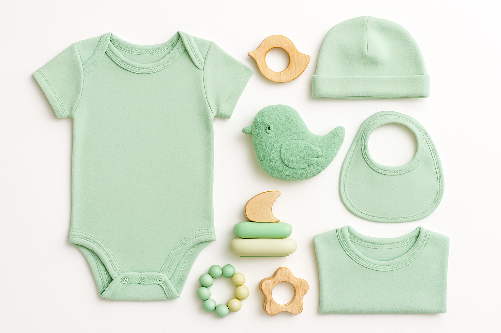
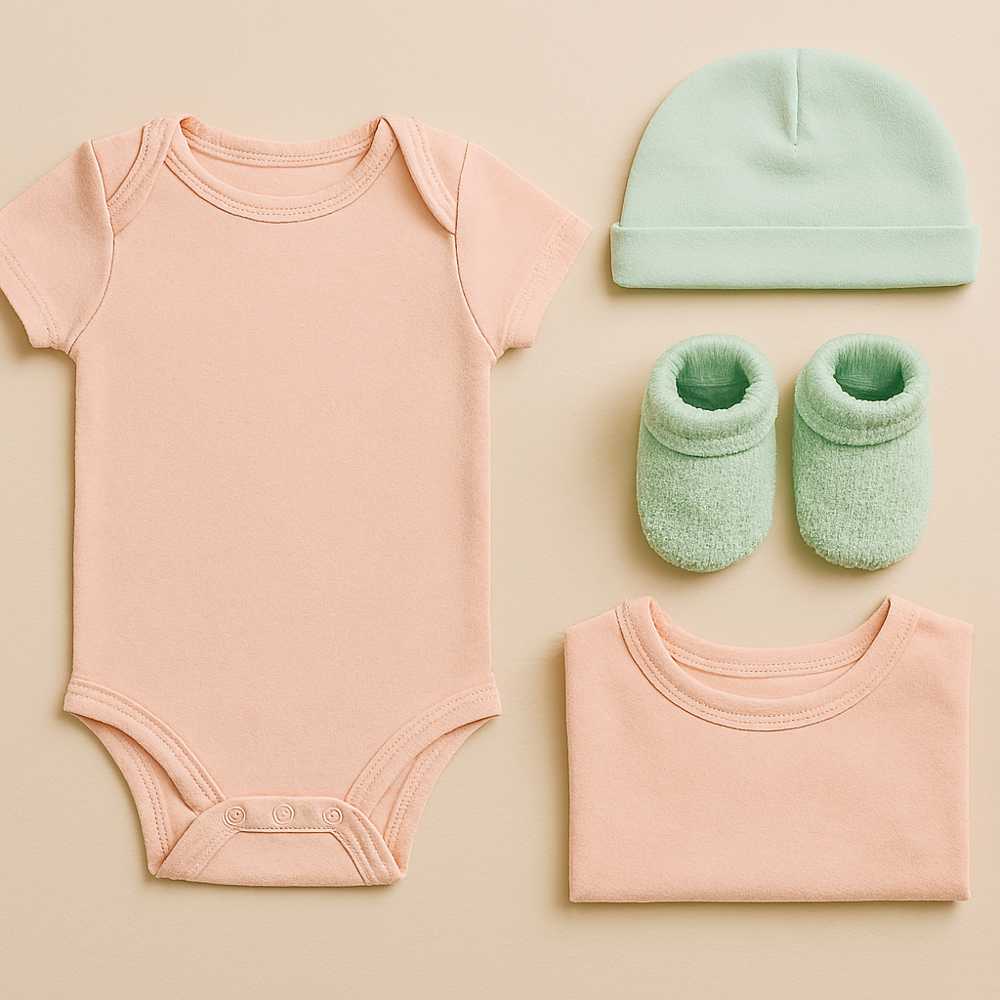
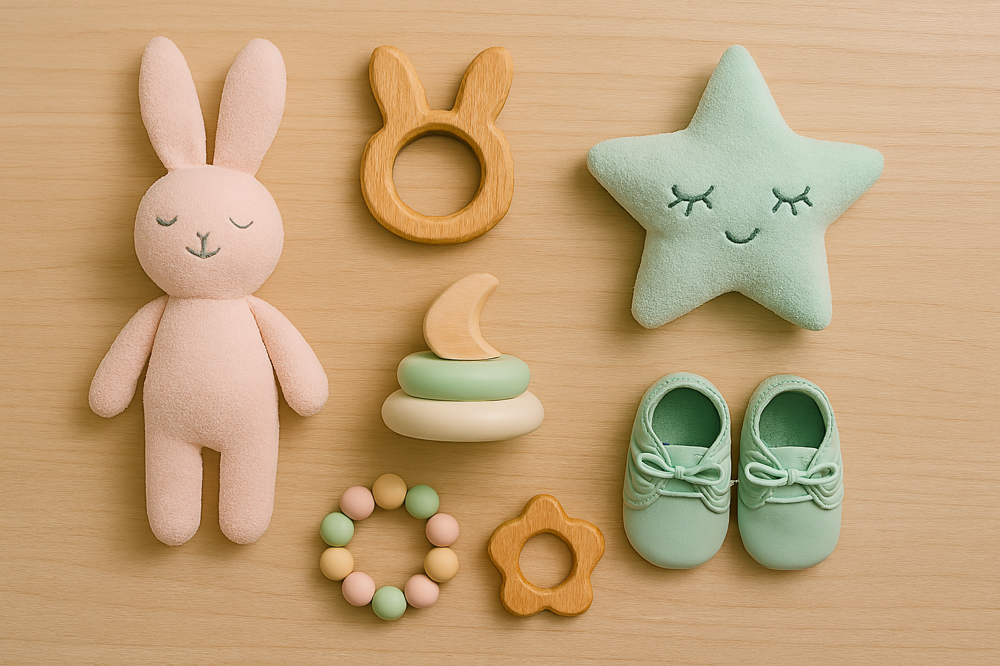

Welcome to Baby & Me — your go-to store for beautiful, practical, and lovingly curated products for babies and mums. From soft blankets and organic babywear to essentials for new mothers, we’re here to support your journey with warmth, care, and quality. Every item is chosen with comfort and joy in mind.


